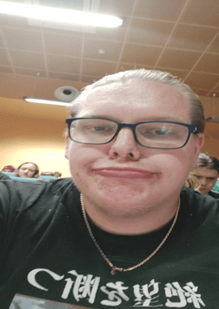

Szymon Dzierzyc ps.Szoopen
Urodzony 14 listopada 2001 roku w Elblągu, absolwent najlepszego technikum w Elblągu. Druga najgrubsza osoba w uniwersum zaraz po
Wojtku. Znany jest głównie ze swojej agresji i toksyczności wobec innych ludzi. Na stałe zamieszkuje w Elblągu na osiedlu
na którym zamieszkuje także Sznyc. Jednak wtrakcie studiowania mieszka on w tzw. Studenckiej melinie.
Jest kibicem najlepszego klubu piłkarskiego na świecie, FC Barcelony. Ma on wiele zasług w historii sznycowania. Wziął on udział w tiktoku sznycera a
dokładniej zagrał główną rolę czyli Gragasa.

Szoopen zamula pizde na uczelni.
Osiągnięcia
- Rekord w ilości przekleństw w jednym zdaniu.
- Osiągnięcie rangi GC w grze z samochodami dla dzieci.
- Zniszczenie pojemnika na szczotkę do kibla w domu Piotra.
Ważne wydarzenia
- olsztyńskie picie
- Rozpierdolenie się na S7
Ciekawostki
- Jest gruby bo żyje według dywizy "chłop bez brzucha słabo rucha".
- Jest drugim najlepszym graczem FIFA23 w olsztyńskim mieszkaniu.
- Jest fanem piwa specjal